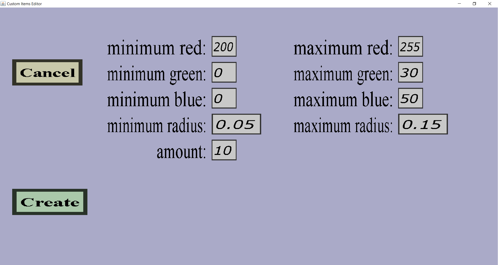

The colored redstone edit menu can be used to add a colored redstone dust effect or modify the properties
of an existing one. If you just started adding such an effect, it should look like this:

There is a 'Cancel' button, a 'Create' or 'Apply' button and there are edit fields for the color,
radius and amount of particles to spawn.
-
The 'Cancel' button will take you back to the effects overview you came
from without keeping any changes or adding the new effect to the list.
-
If you are editing an existing colored redstone effect, there will be an 'Apply' button which will take
you back to the effects overview you came from while keeping all changes
you made in this menu.
-
If you are adding a new colored redstone effect, there will be a 'Create' button which will take
you back to the effects overview you came from and add this new colored
redstone effect to the effect list.
-
The minimum/maximum red/green/blue edit fields together determine the color(s) the redstone dust particles
will get. Each particle will have a color, which consists of a red, green and blue component. Each of them
is an integer between 0 and 255. The greater the red component is, the more the particle will look like red
(similarly for the other components). The red component of each spawned particle will be at least the value
for 'minimum red' and at most the value of 'maximum red' (the other components work similarly).
-
The minimum/maximum radius edit fields determine how far the particles can spawn from the projectile.
Setting them both to 0.0 would ensure that all particles will be spawned at the exact position of the
projectile. Setting the minimum radius to 0 and maximum radius to 1 would ensure that all particles
are spawned at most 1 meter (1 block) away from the projectile.
-
The 'amount' is the amount of colored particles that will be spawned each time the effect is performed.
Choosing a big amount is much less work for you than adding many effects.